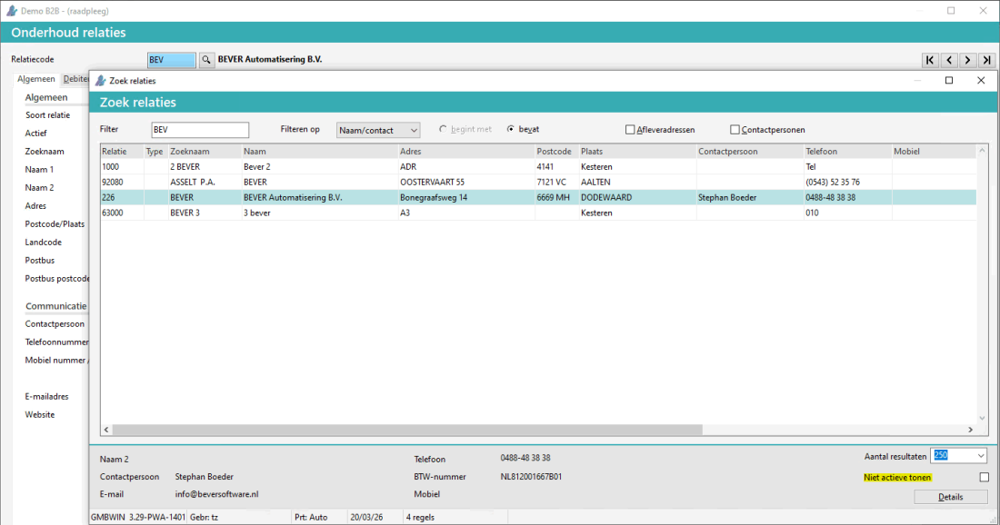

In het scherm Zoek relaties is het mogelijk om op klanten of leveranciers te zoeken. Om dit te doen, doorloopt u de volgende stappen:
Ga naar Opvragen relaties of F6,
of via een andere programma.
Bij Relatiecode druk op F4 (zoeken).
Het scherm Zoek relaties verschijnt.
Zoeken in Afleveradressen en/of Contactgegevens kan aangevinkt worden.
Hier in wordt dan ook gezocht. De vinkjes blijven staan, worden opgeslagen per gebruiker.

De relatie details worden in de voet weergegeven.
Vink het vinkje Niet actieve tonen, om de niet actieve relaties ook te tonen, vanaf versie3.30 geldt dit ook voor contactpersonen
Opmerking: In de voet kan het aantal resultaten (250) aangepast worden, zodat er meer regels weergegeven worden.
FAQ
Opmerking: De plus  en wijzig
en wijzig  knop zijn te gebruiken, indien geautoriseerd. Bijv. als u in het Onderhoudsprogramma kunt, zijn deze knoppen of functietoetsen ALT+O en ALT+W beschikbaar.
knop zijn te gebruiken, indien geautoriseerd. Bijv. als u in het Onderhoudsprogramma kunt, zijn deze knoppen of functietoetsen ALT+O en ALT+W beschikbaar.
Het volgende is hierbij van toepassing bij Zoek relaties:
| Instelling | Optie | Programma's | Afleveradres vinkje | Contactpersoon vinkje |
|---|---|---|---|---|
| Zoeken in afleveradres | Ja | F6 | Aan | Bewaard |
| idem | Orders e.d. | Aan | Bewaard | |
| Zoeken in afleveradres | Nee | F6 | Uit 1e / bewaard | Aan 1e / bewaard |
| idem | Orders e.d. | Uit 1e / bewaard | Uit 1e / bewaard |
De vinkjes worden per administratie per gebruiker bewaard / opgeslagen.
Ja, dat is mogelijk bij Zoek relaties mits geautoriseerd, d.m.v. de plus  en pen-knop
en pen-knop  .
.
De volgende standaard filters kunnen ingesteld worden:
Bij filter alle wordt in alle kolommen / velden van het zoekvenster gezocht op de <filter>.
Standaard staat de filter op naam/contact.
Hierbij wordt gezocht in de kolommen zoeknaam, naam, plaats en contactpersoon.
Bij het gebruik van duidelijke zoeknamen / zoekstructuren kan met de standaard filter zoeknaam gewerkt worden.
Als zoeknaam kan bijv. de eerste drie letters van de naam en de woonplaats gebruikt worden, bijv. Bever Automatisering uit Dodewaard krijg als zoeknaam BEVDOD.
De zoekfilter kan gewijzigd bij Instellingen bedrijf, tabblad Relaties.
Bij Zoek relaties kan gezocht worden op de filters:
Tip: Gebruik de F4 toets om naar de volgende 'filter' te gaan, er kan ook op elke kolom gesorteerd worden.
Opmerking: * Kan standaard ingesteld worden.
In deze kolom geeft informatie m.b.t. de soort gegevens in de regels:
Leeg = Relatie
Afl. = Afleveradres
Het is mogelijk om ook afleveradressen te tonen bij het zoeken.
NB Dit kan ingesteld worden bij Instellingen bedrijf, tabblad Relaties veld Zoeken in afleveradressen is ja.
Cnt. = Contactpersoon
Er kan aangevinkt worden of er ook (standaard) in de Afleveradressen of Contactpersonen gezocht moet worden.
NB Deze instelling wordt per gebruiker opgeslagen.
Tip: Gebruik de uitvouw knop  (boven U bent hier:) om alle vragen uit - of in te vouwen.
(boven U bent hier:) om alle vragen uit - of in te vouwen.
Gerelateerde onderwerpen
Copyright ©